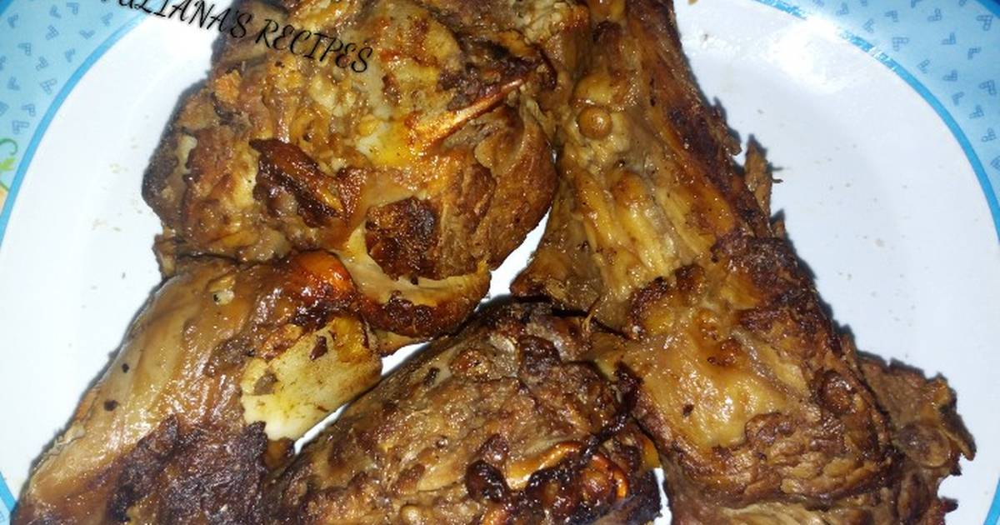

Arosto

Introduction
Arosto is an AFrican roasted meat that requires some skill in it's preparations.
I'll take you through step by step to prepare the tastey meal that you'll definately gonna love.
Ingredients
- 4 chunks of mbuzi(goatmeat) leg part
- 1/2 tspn paprika
- 1 tbspn vinegar
- 2 tbspn cooking oil
- 1 1/2 cup boiling water
- 1 tbspn garam masala
- 2 onions
Steps
- Step 1
Chop the mbuzi chunks and season with salt let it rest for 20 minutes at room temperature
- Step 2
In a large bowl,put paprika,black pepper garam masala and little cooking oil until they're completely mixed

- Step 3
Add the chopped goat meat into the mixed spices bowl and let it rest for 20 minutes again
- Step 4
On medium low heat,put 1 tbspn of cooking oil in a pan,braise the meat until its evenly browned on both sides and set it aside

- Step 5
Using the same pan,fry the onions with cooking oil then add the previously braised meat, vinegar, hot water and cook on high heat for about one hour or more (if its tough meat) until its very tender and brown

- Step 6
Serve with chips/French fries and Red Wine for Men(only)_hahaaa